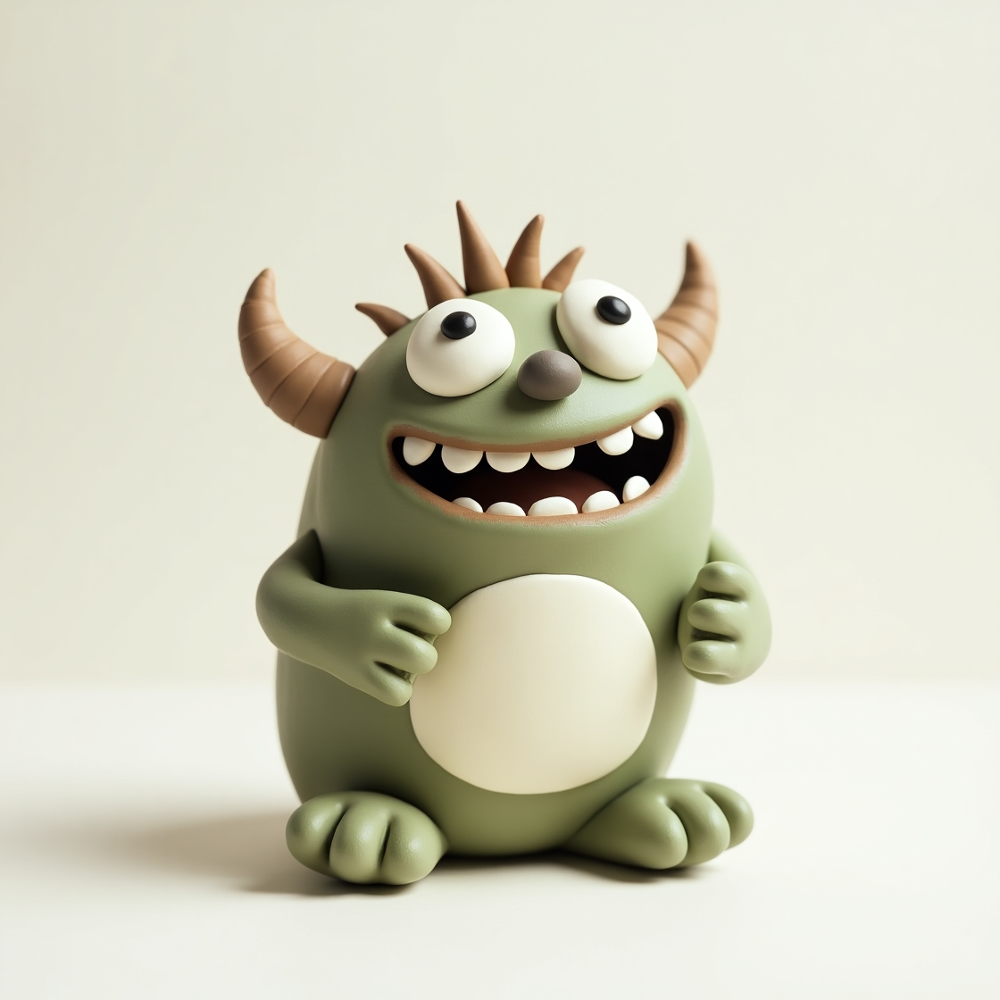

Керамические чудовища, ожившие из легенд
Уникальные скульптуры ручной работы, вдохновлённые мифами и тайнами древних цивилизаций.

В глубине творческой лаборатории, где огонь печи превращает глину в настоящие произведения искусства, рождаются уникальные создания – керамические монстры. Наша мастерская "Монструм" объединяет талантливых художников и ремесленников, вдохновлённых мифами, легендами и потусторонними существами.
Каждый монстр, созданный в наших стенах, – это не просто фигурка, а персонаж с характером
Наши преимущества
- Эксклюзивные дизайны – ни одна работа не повторяется дважды
- Полностью ручная работа – от лепки до росписи и обжига.
- Слияние искусства и мифологии – наши монстры вдохновлены древними легендами, фантастикой и народным фольклором.